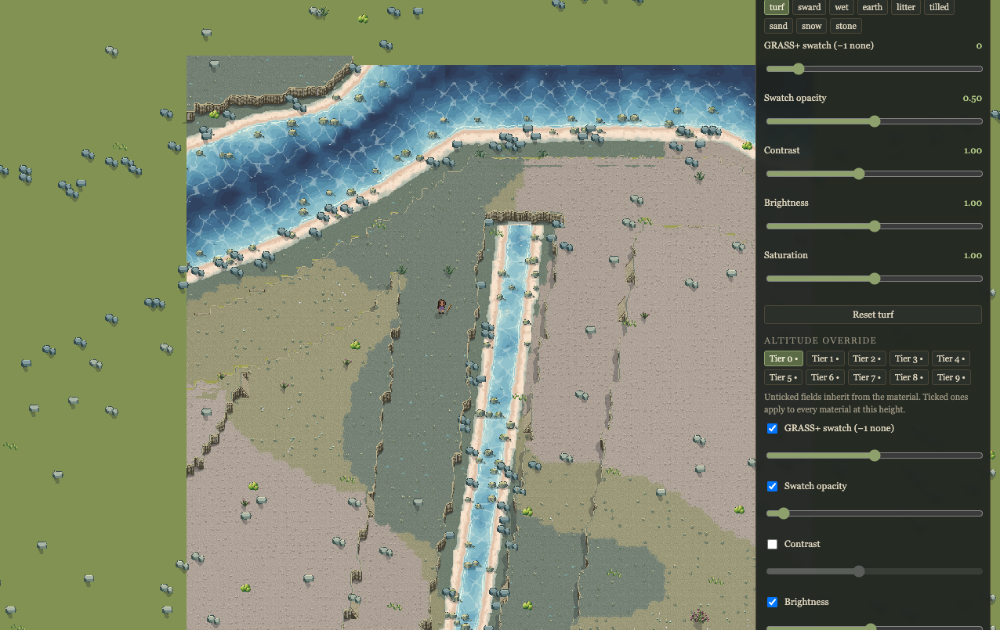
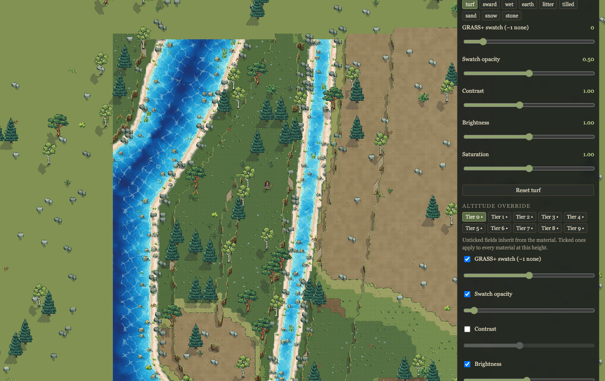
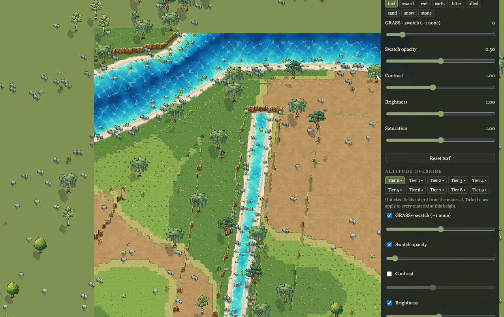
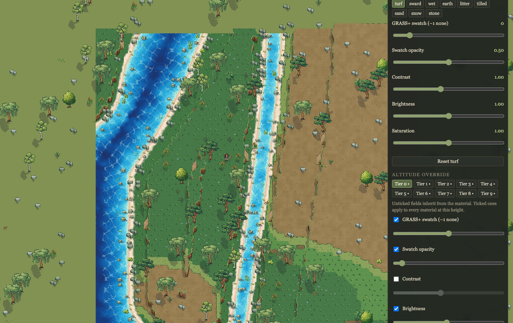
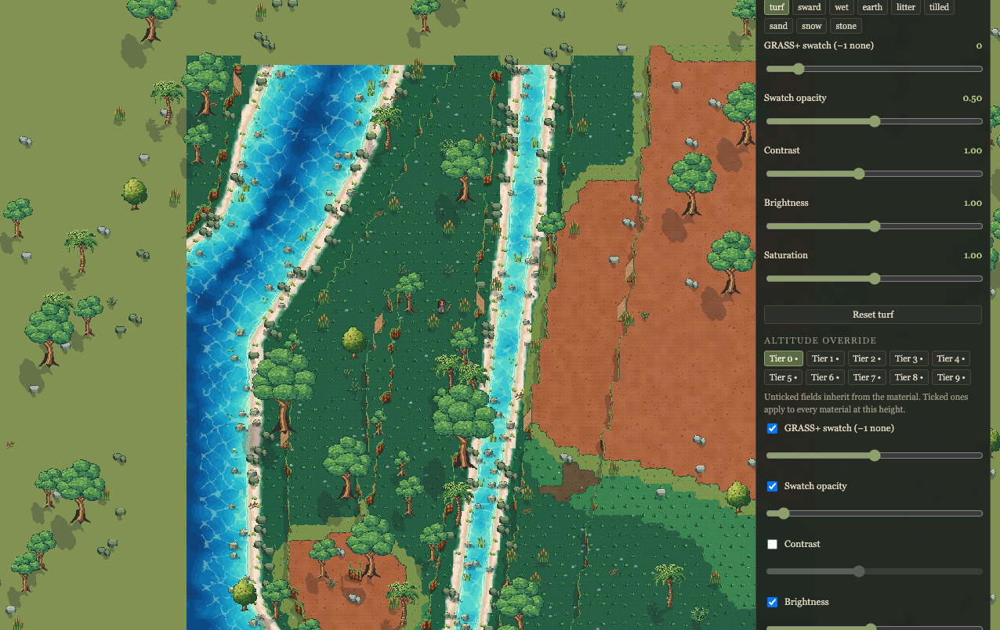
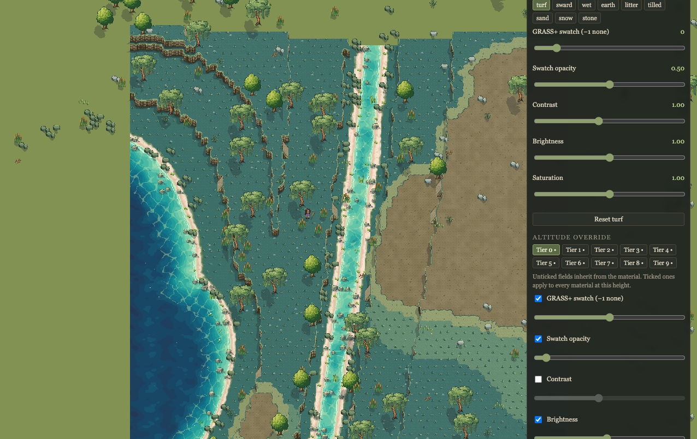
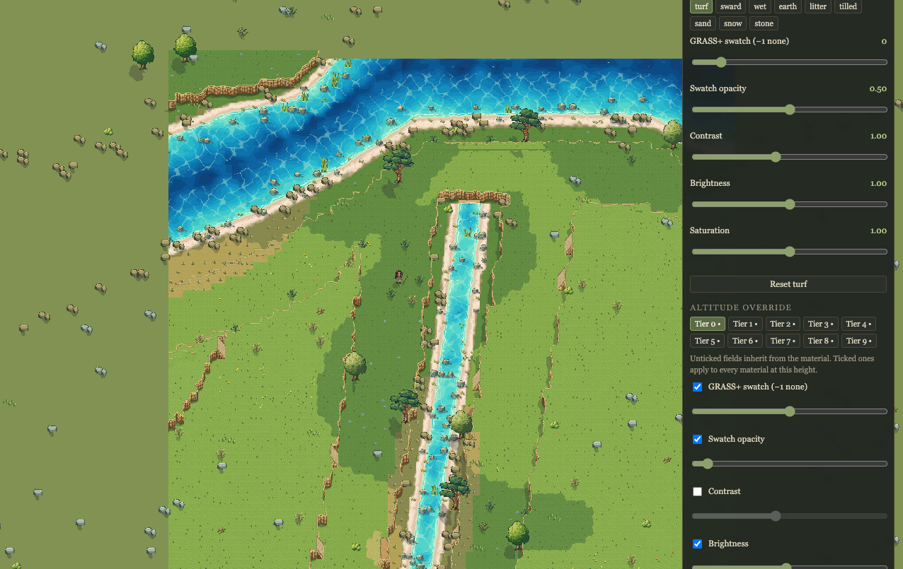
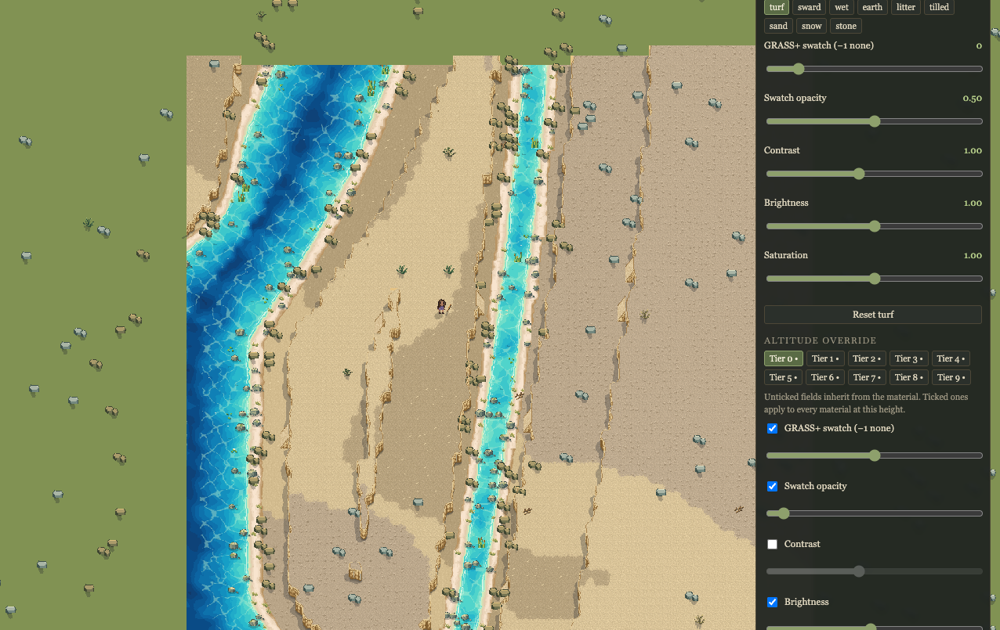
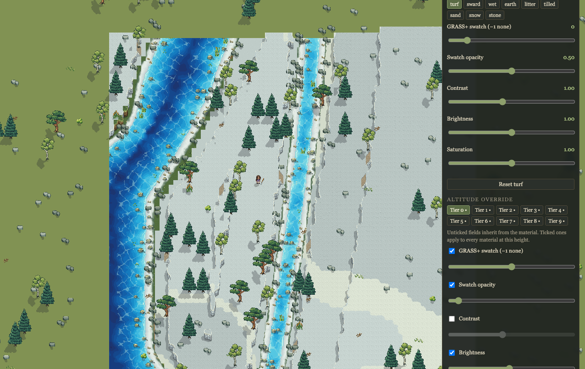

Habitat & terrain art review
tundra-summer

2× detail · Explore
boreal-woodland-summer

2× detail · Explore
grassland-summer

2× detail · Explore
temperate-woodland-autumn

2× detail · Explore
tropical-woodland-summer

2× detail · Explore
wetland-summer

2× detail · Explore
dry-scrub-summer

2× detail · Explore
desert-summer

2× detail · Explore
boreal-woodland-winter

2× detail · Explore